|
| Tutoriel |
|---|
| Robot Workbench |
| Niveau |
| Intermédiaire |
| Temps d'exécution estimé |
| Auteur |
| Version de FreeCAD |
| Fichier(s) exemple(s) |
Cet article concerne l'importation d'un robot industriel à 6 axes standard dans FreeCAD pour fins de simulation.
La description est conforme au système Denavit-Hartenberg, tel que décrit également dans le livre de John J. Craigs « Introduction to Robotics ».
Exemple Kuka
| 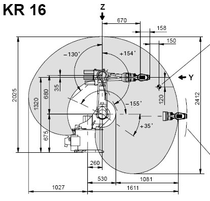 | 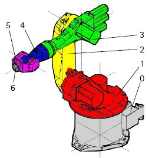 | 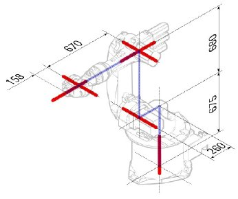 |
{kind=link}
{kind=link}
{kind=link}
Cinématique
| Segment | Paramètre | Description |
|---|---|---|
| 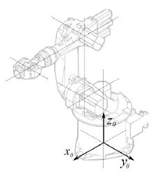 | Configuration de base | |
| 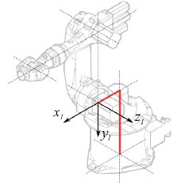 |
<math>\theta_{1} = q_{1}</math> <math>d_{1} = 675 mm </math> <math>a_{1} = 260 mm </math> <math>\alpha_{1} = −90</math>° |
Segment 1 |
| 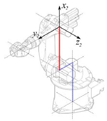 |
<math>\theta_{2} = q_{2} - 90</math>° <math>d_{2} = 0 mm </math> <math>a_{2} = 680 mm </math> <math>\alpha_{2} = 0</math>° |
Segment 2 |
| 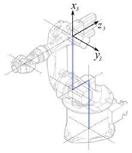 |
<math>\theta_{3} = q_{3} </math> <math>d_{3} = 0 mm </math> <math>a_{3} = 0 mm </math> <math>\alpha_{3} = 90</math>° |
Segment 3 |
| 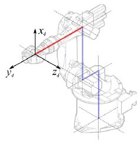 |
<math>\theta_{4} = q_{4} </math> <math>d_{4} = -670 mm </math> <math>a_{4} = 0 mm </math> <math>\alpha_{4} = -90</math>° |
Segment 4 |
| 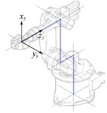 |
<math>\theta_{5} = q_{5} </math> <math>d_{5} = 0 mm </math> <math>a_{5} = 0 mm </math> <math>\alpha_{5} = 90</math>° |
Segment 5 |
| 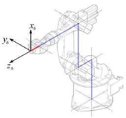 |
<math>\theta_{6} = q_{6} </math> <math>d_{6} = 0 mm </math> <math>a_{6} = -158 mm </math> <math>\alpha_{6} = 180</math>° |
Segment 6 |
{kind=link}
{kind=link}
{kind=link}
{kind=link}
{kind=link}
{kind=link}
{kind=link}
Cela conduit au tableau suivant :
| <math>i</math> | <math>\theta</math> | <math>d</math> | <math>a</math> | <math>\alpha</math> |
|---|---|---|---|---|
| 1 | q1 | 675 mm | 260 mm | -90° |
| 2 | q2 - 90° | 0 mm | 680 mm | 0° |
| 3 | q3 | 0 mm | 0 mm | 90° |
| 4 | q4 | -670 mm | 0 mm | -90° |
| 5 | q5 | 0 mm | 0 mm | 90° |
| 6 | q6 | -158 mm | 0 mm | 180° |
Puisque les axes des robots Kuka robots ne sont pas toutes à 0 dans la L-Position, il faut changer les axes 2 & 3 de 90°.
| <math>i</math> | <math>\theta</math> | <math>d</math> | <math>a</math> | <math>\alpha</math> |
|---|---|---|---|---|
| 1 | q1 | 675 mm | 260 mm | -90° |
| 2 | q2 | 0 mm | 680 mm | 0° |
| 3 | q3 - 90° | 0 mm | 0 mm | 90° |
| 4 | q4 | -670 mm | 0 mm | -90° |
| 5 | q5 | 0 mm | 0 mm | 90° |
| 6 | q6 | -158 mm | 0 mm | 180° |
Dans la fiche technique se trouvent des informations supplémentaires au sujet des axes :
{kind=link}
Ce qui conduit à ce tableau complet :
| <math>i</math> | <math>\theta</math> | <math>d</math> | <math>a</math> | <math>\alpha</math> | <math>\theta_{min}</math> | <math>\theta_{max}</math> | Axis Speed |
|---|---|---|---|---|---|---|---|
| 1 | 0 | 675 | 260 | -90 | -185 | 185 | 156 |
| 2 | 0 | 0 | 680 | 0 | -155 | 35 | 156 |
| 3 | - 90 | 0 | 0 | 90 | -130 | 154 | 156 |
| 4 | 0 | -670 | 0 | -90 | -350 | 350 | 330 |
| 5 | 0 | 0 | 0 | 90 | -130 | 130 | 330 |
| 6 | 0 | -158 | 0 | 180 | -350 | 350 | 615 |
Représentation visuelle
FreeCAD peut générer une ébauche visuelle du tableau cinématique. Mais si vous voulez un visuel plus près de la réalité, vous pouvez utiliser un fichier VRML comprenant la forme du robot pour la simulation. Par exemple, Kuka publie des fichiers VRML de ses modèles. Le fichier VRML est chargé pendant la création d'un robot spécifique dans FreeCAD. Afin de permettre à FreeCAD de bouger les axes, il faut éditer le fichier VRML et insérer des nodes spéciaux de transformation que FreeCAD peut trouver et manipuler.
Voici par exemple pour le Kuka KR 16. En commençant à la ligne 1:
#VRML V2.0 utf8
#
# This VRML97 file was exported using eM-Workplace
# (c) Tecnomatix Technologies GmbH & Co. KG
# Heisenberg-Bogen 1
# D-85609 Aschheim-Dornach
# GERMANY
#
#Background
#{
# skyColor [0.752941 0.752941 0.752941]
#}
Transform
{
#rotation 1 0 0 -1.5707963
#scale .001 .001 .001
children
[
DEF AOBJ_0001_000_TRAFO Transform
{
children
[
...
On voit que ce fichier a été exporté par un logiciel de simulation de robot nommé Tecnomatix. Supprimez cette note et insérez l'URL d'où vous avez pris ce fichier, puisque Tecnomatix n'a aucun droit sur le contenu du fichier. Il s'agit seulement d'un convertisseur ! Tout d'abord supprimons le node Background. Puis supprimons les nodes rotation et scale pour mettre le modèle en mm et l'axe en Z vertical.
Tout à la fin :
] }
] }
] }
]
}
#ROUTE SENS_04_OBJ.rotation_changed TO AXIS_04_OBJ.rotation
#ROUTE SENS_27_OBJ.rotation_changed TO AXIS_27_OBJ.rotation
#ROUTE SENS_32_OBJ.rotation_changed TO AXIS_32_OBJ.rotation
#ROUTE SENS_44_OBJ.rotation_changed TO AXIS_44_OBJ.rotation
#ROUTE SENS_46_OBJ.rotation_changed TO AXIS_46_OBJ.rotation
#ROUTE SENS_49_OBJ.rotation_changed TO AXIS_49_OBJ.rotation
#DEF AnySIMTimer TimeSensor
#{
# cycleInterval 1.000000
# loop TRUE
#}
Commentez le TimeSensor et les 6 routes. Ces 6 lignes indiquent où les axes du robot se trouvent ! Cherchez d'abord "AXIS_04_OBJ" qui vous amène à cet endroit :
...
Transform { rotation 1 0 0 1.570796 children [
DEF SENS_04_OBJ-0001 CylinderSensor
{
diskAngle 1.570796
minAngle -3.228859
maxAngle 3.228859
offset 0.000000
}
DEF FREECAD_AXIS1 Transform { rotation 0 1 0 0 children [
DEF AXIS_04_OBJ-0001 Transform
{
children
[
Transform { rotation 1 0 0 -1.570796 children [
DEF AOBJ_0001_003_TRAFO Transform
{
rotation 1.000000 0.000000 0.000000 3.141593
translation -600.000000 500.000000 300.000000
children
[
...
Vous devez insérer très exactement au dessus de la définition de ce node la ligne : "DEF FREECAD_AXIS1 Transform { rotation 0 1 0 0 children [" qui est le point d'ancrage de FreeCAD pour déplacer l'axe.
Faites ensuite la même chose pour FREECAD_AXIS2,FREECAD_AXIS3,FREECAD_AXIS4,FREECAD_AXIS5 et FREECAD_AXIS6. N'oubliez pas de fermer les crochets à la fin du fichier et voilà, vous avez terminé !
Vous pouvez charger le fichier VRML par instanciation du robot:
App.activeDocument().addObject("Robot::RobotObject","Robot")
App.activeDocument().Robot.RobotVrmlFile = "C:/_Projekte/FreeCAD0.9_build/mod/Robot/Lib/Kuka/kr16.wrl"
Ce qui devrait vous donner ce résultat : 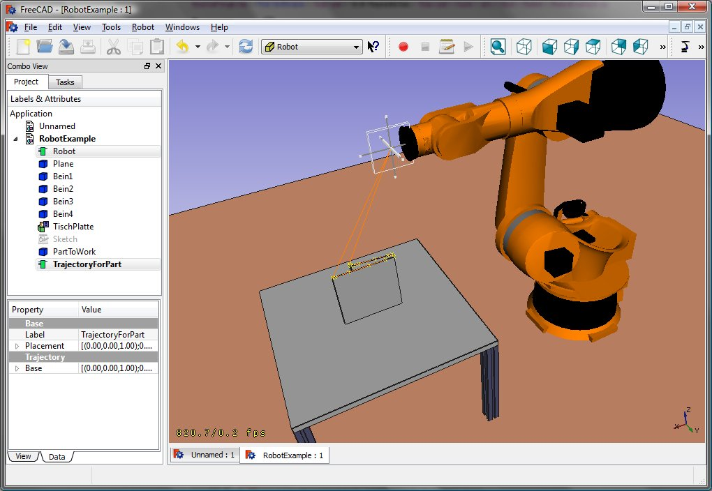
{kind=link}
KR 210
| <math>i</math> | <math>\theta</math> | <math>d</math> | <math>a</math> | <math>\alpha</math> | <math>\theta_{min}</math> | <math>\theta_{max}</math> | Axis Speed |
|---|---|---|---|---|---|---|---|
| 1 | 0 | 750 | 350 | -90 | -185 | 185 | 156 |
| 2 | 0 | 0 | 1250 | 0 | -155 | 35 | 156 |
| 3 | - 90 | 0 | 0 | 90 | -130 | 154 | 156 |
| 4 | 0 | -1100 | 0 | -90 | -350 | 350 | 330 |
| 5 | 0 | 0 | 0 | 90 | -130 | 130 | 330 |
| 6 | 0 | -230 | 0 | 180 | -350 | 350 | 615 |
KR 500
| <math>i</math> | <math>\theta</math> | <math>d</math> | <math>a</math> | <math>\alpha</math> | <math>\theta_{min}</math> | <math>\theta_{max}</math> | Axis Speed |
|---|---|---|---|---|---|---|---|
| 1 | 0 | 1045 | 500 | -90 | -185 | 185 | 156 |
| 2 | 0 | 0 | 1300 | 0 | -155 | 35 | 156 |
| 3 | - 90 | 0 | 0 | 90 | -130 | 154 | 156 |
| 4 | 0 | -1025 | 0 | -90 | -350 | 350 | 330 |
| 5 | 0 | 0 | 0 | 90 | -130 | 130 | 330 |
| 6 | 0 | -250 | 0 | 180 | -350 | 350 | 615 |